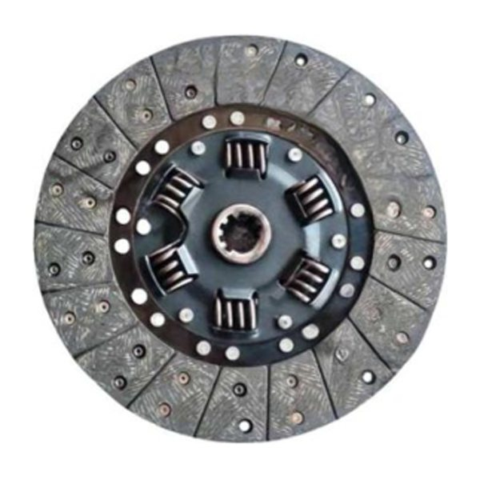

Parts › Transmission & Drive Axle › 10869-401

Available
Email for a quote
Toyota 10869-401 Clutch Disc
| OEM part number | 10869-401 |
| Fits | Toyota |
| Models / notes | 10T*®275 |
| Category | Transmission & Drive Axle |
| Type | Aftermarket replacement |
Send us the quantity you need and we'll reply with pricing, usually within 24 hours. Not the exact part? We can source it. Send the part number or a photo.